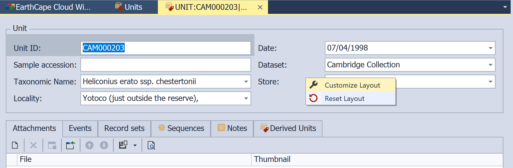
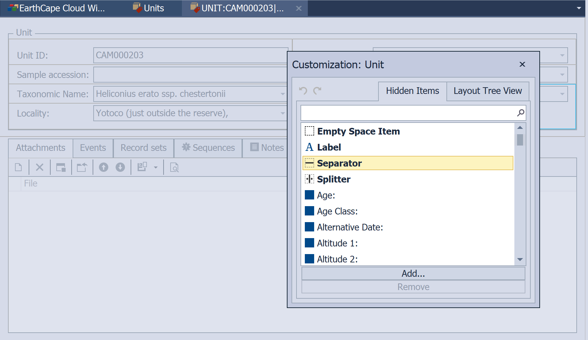
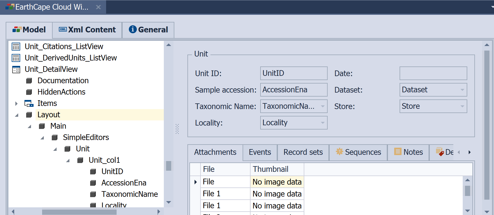
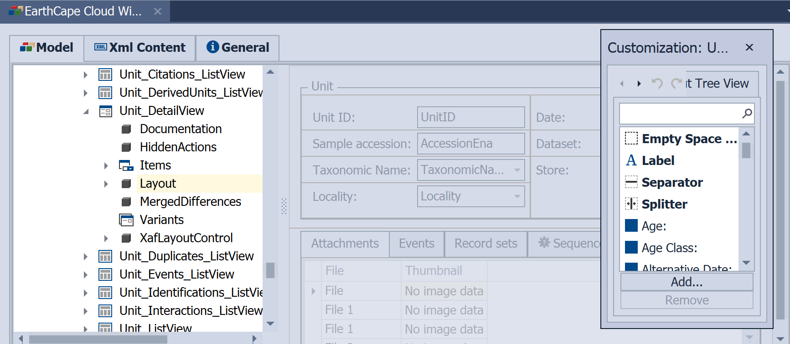
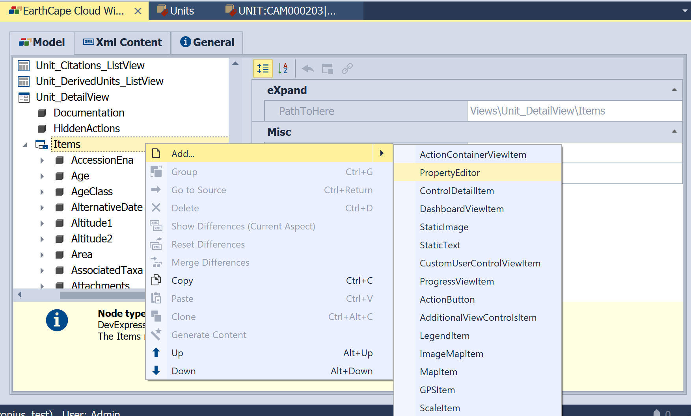
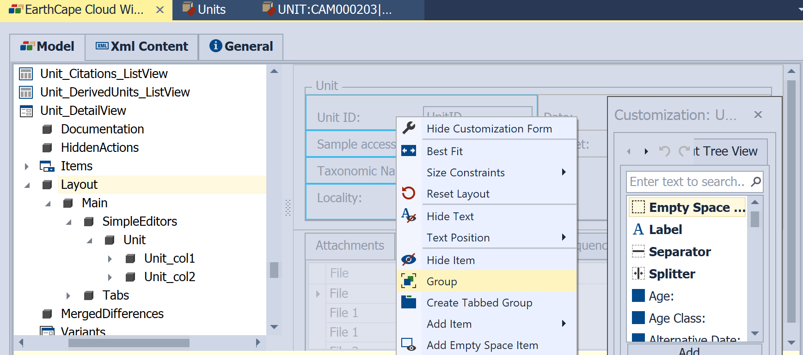

View Items Layout Customization
This lesson will guide you through the steps needed to customize form elements for DetailViews. For this purpose, the Units List View will be used. At runtime (Windows Client only), you can right-click empty area between form fields and choose "Customize layout".

then drag invisible fields and layout elements from the Customization window to the form (detail view).

In an EarthCape Windows Client application, the customizations made using the Runtime Customization window are saved in the user record of Application Model. The form layout available by default for all users of the respective application edit the corresponding record of Application Model.
Model Editor based customization
Design-time layout customizations are performed using the Model Editor. The DashboardView and DetailView nodes have a Layout child node, which grants you access to the layout settings. When the Layout node is selected, the property list to the right is replaced with a design surface that imitates the current View. This allows you to see how the View will be displayed at runtime. The Layout node exposes a tree of nodes that comprises groups, tabbed groups, layout items, labels, separators, etc.

To modify default View Items layout, right-click on an empty space and choose Customize Layout. This will invoke the Customization form allowing you to drag View Items where required. The graphical prompts will display the item's target position.

When customizing at design-time, you can also remove and restore View Items by dragging the required items from the View to the Customization form, and vice versa.
To see the View Items layout tree, use the Layout Tree View tab on the Customization form. Invoke the context menu for additional customization options.
Additional customization options, which are listed below, can be accessed using the Layout node's child nodes.
- Reorder Layout Groups and Layout Items
The LayoutGroup, TabbedGroup and LayoutItem nodes have the Index property. Use this property to set the order within specific levels, Layout Groups or Layout Items.
- Modify a Caption
Specify whether or not a Caption is displayed for a Layout Group, Tabbed Group or Layout Item using the ShowCaption property.
Specify a Caption for a group or item if you have made it visible. To do this, use the Caption property.
Specify the location of a group or item caption using the CaptionLocation property.
- Specify the direction of nested Layout Groups or Layout Items
Specify whether the groups (or items) within one level are arranged consecutively from left to right or from top to bottom. To do that, use the Layout Group's Direction property.
- Move a Layout Item to another Layout Group
Use the drag-and-drop operation to move a Layout Item to the desired Layout Group.
You can add new items to a Detail View. Right-click the DetailView | Items node, navigate to the Add... group, choose the required View Item type and customize the newly added item as needed.

After the new item is added, put it on the Detail View as described above.
Note The Splitter, Separator and Label items are specific to a Windows Client application. These items are not available in the Model Editor invoked for Web Client application. There are several Windows Client specific properties that are not available in the Model Editor invoked for an Web Client.
LayoutGroup node's IModelWinLayoutGroup.TextAlignMode property LayoutItem node's IModelWinLayoutItem.TextAlignMode property LayoutItem node's IModelLayoutItem.SizeConstraintsType property
General Layout Settings
A number of layout options that affect all Views are available in the Model Editor's Options | LayoutManagerOptions node. For example, you can disable the colon sign that is added to item captions using the EnableCaptionColon property.
Notes
- By default, the width of Layout Items is not locked and is calculated according to the width of the Layout Group it belongs to. Thus, Layout Items belonging to different Layout Groups will have different alignments.
Place Items in the same Group to keep them aligned.

- When you rearrange a layout by moving a Layout Item to a higher-level group, additional spacing between the Item moved and the next Item appears.
- If you wish to keep equal spacing between Items, keep them in the same Group.
- Items and nested Groups inside each Group can be arranged either vertically or horizontally (Direction).
- All components within the same group have the same orientation. In order to arrange two groups horizontally, thus forming two columns of Items, you must put these two groups into another group. This process is called wrapping. You should note that extra wrapping groups can be created automatically when you drag items on the Layout design surface.
- When you move or hide a Layout Item, its Layout Group stays on the form.